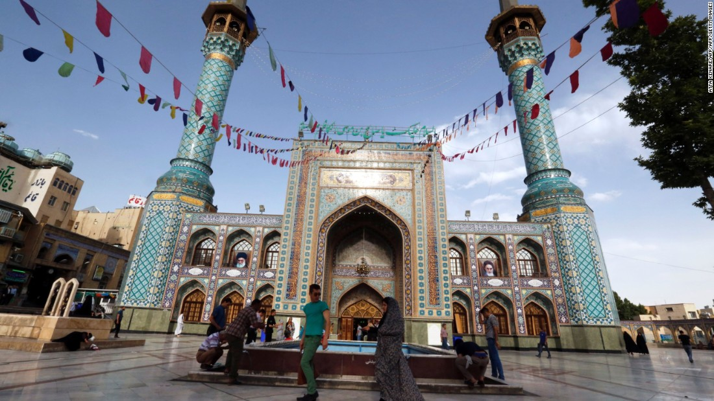

Persian-speaking city in the world, the majority of Tehran's population is Persian- speaking, and most of the people in this city are officially Muslim and Twelver Imami Shiites . Other religious communities in Tehran include Sunnis , Bahais , Zoroastrians , Christians and Jews . The history of life in Tehran goes back to the Neolithic period , and archaeological excavations in Tehran have led to the discovery of 7,000-year-old human skeletons and stone tools. At the beginning of the 7th century , with the destruction of the city of Ray and the migration of its people to Tehran, the knowledge of trade, construction and citizenship of the Ray people was transferred to Tehran and led to its development. During the Safavid era, the importance of Tehran increased a lot, but the source of prosperity and progress of this city goes back to its capital. Agha Mohammad Khan Qajar , the founder of the Qajar dynasty , who after many attempts to capture Tehran, finally succeeded in doing so, called Tehran the capital in Nowruz 1165, after years of war with the Zand family and the claimants of the kingdom. The transformation of Tehran from an ordinary city to a modern capital started from the Pahlavi era . During the Pahlavi era, state affairs were concentrated in the capital and the number of government employees in the city increased rapidly; During this period, the city of Tehran, in addition to political and commercial duties, also accepted administrative duties. With the 1357 revolution and the start of the Iran-Iraq war , there was no development in Tehran for nearly a decade, and after the end of this period, the development of the capital of Iran continued and Tehran became the center of population acceptance in Iran. Tehran is the economic center of Iran and is considered the first industrial area of the country, but international economic activities do not play a significant role in the number of its employees. According to the statistics of 2015, Tehran's share in the total gross domestic product of Iran is 21%, and by allocating half of the country's industry to itself, it plays an important role in Iran's economy . This city is considered one of the most important tourist centers of Iran and has a series of tourist attractions including its palaces and museums . Azadi Tower is the symbol of Tehran and the charter of Cyrus the Great was unveiled for the first time in this place. Milad Tower is another symbol of Tehran and the tallest tower in Iran . By hosting the 1974 Asian Games , Tehran was the first city in the Middle East to host the Asian Games, and the Azadi Sports Complex , one of the most advanced of that era, was opened at the same time as these games on 10 Shahrivar 1353. Administratively, Tehran is divided into 22 districts and 122 urban districts and includes the cities of Tajrish and Ray . The city administration is done by Tehran Municipality . The mayor of Tehran is elected by the Tehran City Council , and this council supervises the performance of the municipality and legislates for the city administration. In 1347, the first comprehensive plan of Tehran, with a 25-year horizon, was prepared under the responsibility of Abdul Aziz Farmanfarmaian and Victor Gruen , which has been one of the most important legal bases for the development of the city of Tehran. As a political and administrative center, the most important governmental and judicial institutions of Iran, such as the ministries and the Islamic Council , where Tehran has 30 representatives, are located in this city. This city has two international airports , Imam Khomeini and